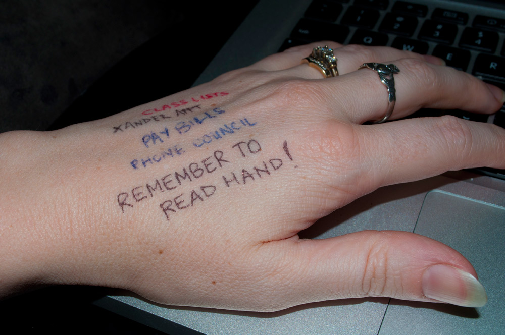

In the lecture about the topic wearables I learned about what wearables are, how to are presently used and also what kind of technological possibilities excist. For the assignment we've been given two cases to choose from.
I've chosen the following case
Smart tattoos as a new way of communicatingCan you think of an interactive wearable concept that has not been mentioned in the lecture, that stimulates social interaction based on smart tattoos?
Ever since things like NFC came out I've been thinking about possible uses for the technology. I feel like it's underused at the moment and I think one way to build on and improve the general concept of NFC stickers would be using NFC (temporary or permanent, depending on the use) smart tattoo's.
But how would that be used for stimulating social interactions?
Using the smart tattoo's with the ability to store custom changeable data on it. For example a tattoo on the bottom of your wrist. The wrist is a place where people who, like me, forget stuff all the time often write down small but important reminders with a pen or a marker. This is first and foremost not healthy since most inks shouldn't be used on skin regularly. But the second thing is that it is messy. It's either hard to get rid of when it isn't needed anymore or on the other hand actually smears or gets washed away too quickly. It's just overall a bad system. It might seem hard to imagine this having anything to do with stimulating social interactions but I'm getting there, promise.
As a chaotic person it has sort off partly defined my personality and how people see me. When you go into a classroom or a meeting or a party and people see the don't forget messages on your arm it's almost always immediately a fun topic or icebreaker. It brings a strange kind of unity and social bonding because people now know a small bit off what is on your mind. Besides providing topic options it gives people the possibilities to potentially help and remind others. For example when you write down an appointment and the time and someone sees it they can remind you when it's nearly that time.

We all start to become more individualistic and independent and this sometimes makes it harder to ask others about small things and also hard to know who could help and to ask for help in general.
I think the technology of wearable Near Field Communication is for now the best option to make sure people around you have the option to read the data but it isn’t something the entire room can access all the time.
It also opens up other protentional uses like adding options for letting people know you’re to busy to talk right now or are actually free for coffee, what your mood is and stuff like that.
INCOMPLETE
A gathering place of your own research within this topic. Do not just give a reference / link to cool projects, but describe in your own words what you have found and what this means (eg for a user, for the field, to you). Why is this so interesting?
INCOMPLETE
How do you view this topic within your own life, society and the future? What did you consider the most valuable aspect of this topic?